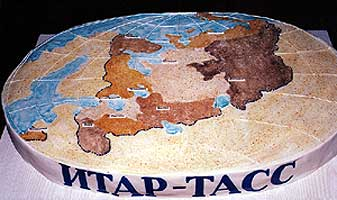
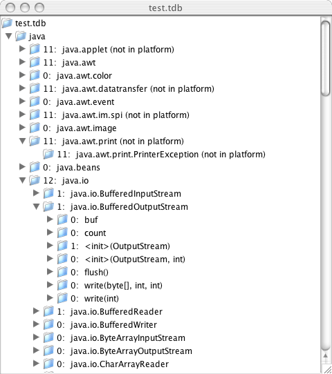

TASS is a program to analyze the class files of an application. In
other words, it delivers you news about your application. It can
check the static references in application class files, and compare
them to
a target platfrom.
It reads all of the classes of an application,
and inspects each class file. All references outside of the class
file are inspected, if the reference is to a platform package.
References to API elements in a platform package are flagged
as errors if the API elements are not present in the platform
definition. External references to non-platform packages are
not checked.
Additionally, TASS allows you to collect information about the API elements used by several applications into a small database file. This database file can be analyzed and reported on in various ways.
TASS is intended to be used in situations where you receive a compiled application or library, and you want to check to see if it unintentionally uses API elements that are not guaranteed to be present in a target device, like an MHP or BD-J terminal. In practice, this is sometimes a problem, for example if code is developed by hand using J2SE on a PC, or otherwise taken from a different environment. Usually these errors are easy to correct, once found, but they won't necessarily be noticed on all terminal implementations. This is because a terminal implementation may include a superset of the minimum API elements required, under certain limited conditions. TASS can also help you understand what platform features are and aren't used by a set of applications.
TASS is not a tool intended to do more in-depth static checking of Java code than is already done by javac. Javac does a good job of static checking already; if you have the source code to an application,
javac -bootclasspath <platform classes> <app source>
will give you more information, and better error messages. TASS is not lint: lint made up for the limitations of static checking in pre-ANSI C compilers. Such a tool is not necessary in java, where javac already does a very good job of static validation.
This program requires a set of .class files representing the platform. It is not provided in this distribution. "Stub" class files, representing the external API but with no meaningful method implementations may be available for this purpose. If not, one can check against a real platform implementation, but sometimes real platform implementations contain API elements that are not guaranteed to be present. If this is a risk, then finding a set of platform stub classes is recommended.
In addition to platform stubs, this program needs a list of packages that are considered to define the platform. An example, derived from publicly-available informative documents describing the BD-J platform, is available as lib/packages.txt.
This product includes software developed by the Apache Software Foundation (http://www.apache.org/). Specifically, this program relies on the BCEL library version 5.1, which comes from the Jakarta project. It is available at http://jakarta.apache.org/bcel/, and a copy is included with this distribution. The BCEL license is available in bcel-5.1/LICENSE.txt. I don't recommend using a later version of BCEL without careful consideration, because it's possible that the behavior of later versions may not be backwards compatible. For example, the syntax of some of the string representations might change.
A sample run is shown below. In it, TASS is run against a mock application that intentionally contains many bad references.
./run.sh
Error in bad$1: Class file version number 48.0 is greater than maximum 47.0
Error in bad$1: Platform class java.awt.datatransfer.ClipboardOwner not found.
Error in bad$1: Platform class java.awt.datatransfer.Clipboard not found.
Error in bad$1: Platform class java.awt.datatransfer.Transferable not found.
Error in bad$2: Class file version number 48.0 is greater than maximum 47.0
Error in bad$2: Platform class java.awt.datatransfer.DataFlavor not found.
Error in bad: Class file version number 48.0 is greater than maximum 47.0
Error in bad: Platform class java.applet.Applet not found.
Error in bad: Platform class java.applet.AppletContext not found.
Error in bad: Platform class java.awt.im.spi.InputMethod not found.
Error in bad: Platform class java.awt.print.PrinterException not found.
Error in bad: Platform class java.nio.channels.ByteChannel not found.
Error in bad: Platform method java.awt.Graphics2D.rotate(double) not found.
Error in bad: Platform method java.awt.Graphics2D.rotate(double, double, double) not found.
Error in bad: Platform method java.awt.Graphics2D.setPaint(java.awt.Paint) not found.
Error in bad: Platform field java.awt.Color.BLACK not found.
Application had 16 error(s). Exiting with exit code 1
The entry point for this test program is the class Test.
TASS contains a reporting module that allows one to analyze the platform API signatures referenced by an application. This can be useful, for example, to survey a number of applications and determine what platform features are used.
It is useful to consider the limitations of this simple form of static analysis. One must consider the implications of a static reference to a platform API signature. Take, for example, this code snippet:
java.util.Set hs = new java.util.HashSet();
hs.contains(null);
In this code, there is a reference to the constructor
of HashSet, and there is a reference to the method
Set.contains(Object). There is no static refence to
HashSet.contains(Object), even though this method
will clearly be called. Unless one employs data-flow analysis,
dynamic method-call tracking or other more advanced analysis
techniques, the best
that one can conclude from the simple static analysis done by TASS
is that there is a reference to an inherited declaration of
HashSet.contains(Object). To take another example,
consider:
public String callObjectToString(Object foo) {
return foo.toString();
}
A fair number of classes override toString(). With this method present, simple static analysis is forced to conclude that all such classes might have their to toString() method invoked, even though most of them probably don't.
Finally, one must consider reflection. An application using
the java.lang.reflect.* classes could, in principle,
call any platform API. Such calls are not detectable using simple
static analysis. However, such fully reflective access should be
a very rare exception in typical applications.
For reporting, application references are captured in a database file, given the extension ".tdb". Multiple applications can be captured in a database, and database files can be merged. There's also a GUI viewer of a database file. These functions can be run from their own "main" entry points. In each case, a sample shell script ot run the application is provided. Details on these other entry points are available in the javadocs of the class containing the static main method. See:
A sample of the reports is given below:
************************************************
REPORT OF PLATFORM PACKAGE USAGE
************************************************
11: (java.applet - not in platform)
11: java.awt
0: java.awt.color
<...>
**********************************************
REPORT OF PLATFORM CLASS USAGE
**********************************************
Package java.applet
11: (java.applet.Applet - not in platform)
11: (java.applet.AppletContext - not in platform)
Package java.awt
0: java.awt.ActiveEvent
0: java.awt.Adjustable
0: java.awt.AlphaComposite
0: java.awt.AWTError
0: java.awt.AWTEvent
0: java.awt.AWTEventMulticaster
0: java.awt.AWTException
0: java.awt.AWTPermission
0: java.awt.BorderLayout
11: java.awt.CardLayout
11: java.awt.Color
0: java.awt.Component
0: java.awt.Composite
***********************************************
REPORT OF PLATFORM MEMBER USAGE
***********************************************
<...>
Class java.util.Set
1 (s1): java.util.Set.add(Object)
0 (s0): java.util.Set.addAll(Collection)
0 (s0): java.util.Set.clear()
11 (s11): java.util.Set.contains(Object)
<...>
Class java.util.HashSet
12 : java.util.HashSet.()
0 : java.util.HashSet.(Collection)
0 : java.util.HashSet.(int)
0 : java.util.HashSet.(int, float)
1 (s1): java.util.HashSet.add(Object)
0 (s0): java.util.HashSet.clear()
0 (s0): java.util.HashSet.clone()
1 (s12): java.util.HashSet.contains(Object)
0 (s0): java.util.HashSet.isEmpty()
1 (s1): java.util.HashSet.iterator()
0 (s0): java.util.HashSet.remove(Object)
<...>
A screenshot of the database viewer follows:

Javadocs for TASS are available in javadocs/index.html. The TASS program's main entry point is the class TassChecker. Also included is a simple commmand-line main program to drive TassChecker. It's intended mostly for testing purposes and as an example, although it could be adapted if a command-line tool is desired. Otherwise, TassChecker can be used directly from any Java program.
I built and tested TASS against JDK 1.4, but any subsequent version should work.
A simple shell script to build and run TASS is included, in "run.sh". It should work on any Unix system, like OS/X. It runs TASS against a simple set of files in the directory "test_prog". These classes intentionally reference API elements that are unlikely to be present in a 2005-era standards-based specification including JavaTV.
TASS itself is offered under the Sun Public License, reproduced in LICENSE.html. Its terms are quite generous.
TASS is freely available at http://jovial.com/tass/. It is also a project under java.net at https://tass.dev.java.net. The java.net project is identical, but gives you the option of signing up for announcements, such as the publication of a new version. If you just want a copy of the distribution, it's available from either place in tass.zip, linked out of this top-level HTML page. It includes source, binary, and BCEL.
Before TASS was moved to java.net, it was distributed through a group called DVB-MUG. For this reason, the version numbers are given as revision numbers of a document called "mug134". Subsequently, version numbers started with 0.3.
Version mug134r2 adds checking of the class file version number.
Version mug134r3:
Version mug134r4:
Version mug134r5 adds the GUI viewer, TdbViewer.
Version 0.3, 23 May 2006:
Version 0.4.1, 8 June 2006:
I hope this software is found to be useful. If you use TASS, please consider a donation to your favorite charity.
Bill bill.foote at sun.com